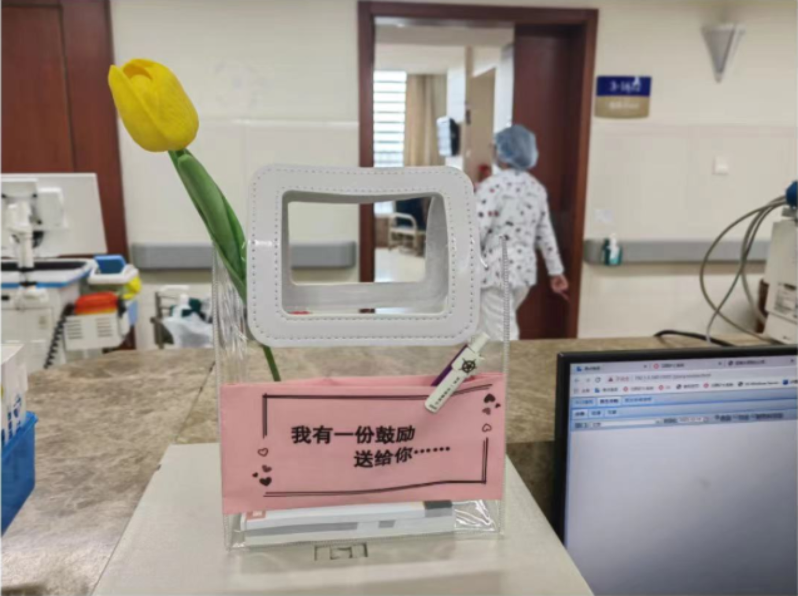

“以爱为墨,以鼓励为药”,护士用 鼓励贴传递希望
人民日报健康客户端
记者
杨林宋
2024-01-30 13:10
浙江大学医学院（Zhejiang University School of Medicine）位于浙江省杭州市，
是浙江大学下设二级学院，是国家首批“卓越医生教育培养计划”项目试点高校，高水平公共卫生学院建设高校 ，
首批教育部、卫生部共建高校医学院的十所部属综合性大学医学院
自2023年12月起,浙江大学医学院附属邵逸夫医院的护士长们纷纷拿起纸和笔,在
一张张纸条上写下对患者的鼓励,这种"鼓励贴"开始在医院多个科室中流行起来,护士长
们将平日里难以言表的关心和鼓励,以文字形式写下来赠予患者,让患者相信"相信"的力量,也是一种希望!

2024年1月28日,摆在医院护士工作台的鼓励贴。 受访者供图